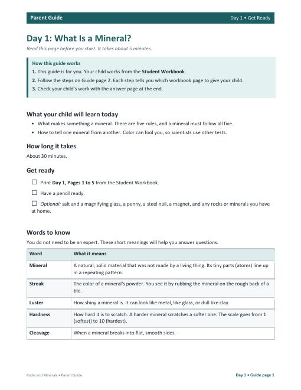

Here are some examples of the customized content that Just4Me will make for your student
These are early examples: short videos, lessons with a parent guide and student workbook, a history podcast and a learning game. With Just4Me, content like this will be created custom for your student, built around their interests and their learning needs.
Built around their interests
Love dinosaurs, trains, or horses? Examples, stories, and activities are built around what your student enjoys.
Fitted to their learning needs
Reading level, read-aloud, shorter steps, more breaks, or extra challenge, set for your student.
You are in charge
You review, change, or skip anything, and you decide how and when your student uses it.
Samples only. Just4Me Education is still in development and not open for sign-up yet.
Big ideas in under a minute
Each short explains one idea in under a minute. You decide whether, when, and how your student watches them.
Nothing loads from YouTube until you press play. Once a video plays, YouTube may store cookies on your device. See our privacy notice.
Three types of rock
Igneous, sedimentary, and metamorphic, and how each one forms.
Weathering, erosion, and deposition
How rock is broken down, carried away, and laid down somewhere new.
Plate boundaries
What happens where Earth's plates pull apart, push together, or slide past.
Volcano types
The main kinds of volcanoes and what shapes them.
Earthquake waves
The different waves an earthquake sends through the ground.
Day 1: What is a mineral?
One day from a rocks and minerals unit. The student learns the five checks that make something a mineral, and why geologists use streak, hardness, and other tests instead of color alone.

Parent Guide
Everything the parent needs to teach the day, without being an expert.
- What the student will learn, and what to get ready
- Words to know, in plain language
- Step-by-step plan with timed steps and what to say
- Answer pages with the reason for each answer

Student Workbook
The pages the student works from, with real mineral photos.
- Two reading pages: the five-point mineral checklist and how geologists identify minerals
- Worksheet: Mineral or not?
- Worksheet: Name that mineral
- An exit ticket the student answers alone
Mineral photos in the workbook are from the U.S. Geological Survey (public domain). The PDFs open in a new tab, where you can read, print, or save them.
Ratify This! Episode 1
"The Group Project Nobody Finished." Benjamin Franklin hosts six founders as they argue over the Constitution and the Federalist Papers. Made for teen listeners.
Listen to the demo
This demo plays the opening through the sponsor break, then the wrap-up and closing.
Voices are computer-generated, and the music and sound effects are original. Essays discussed: Federalist Nos. 1 to 5 and 15, and Brutus No. 1.
In this demo
Dig Site
Your student answers questions to earn digs, then uncovers fossils buried in a quarry. Harder questions earn more digs. You pick the grade, subject, topic and size of the dig site.
This is an early example. The questions are samples written for testing and follow the Maryland standards for each grade.
Made for your student. Run by you.
When Just4Me opens, videos, lessons, and podcasts like these will be created for your student's interests, reading level, pace, and learning needs. You review and can change anything before your student sees it, and you decide how and when to use it.